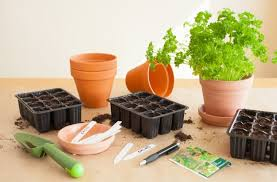
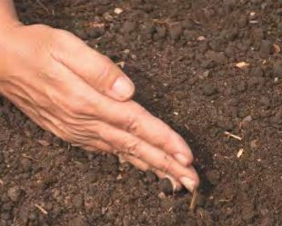
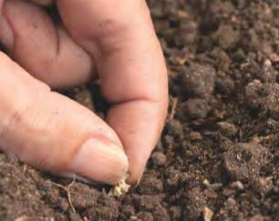
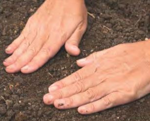
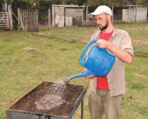
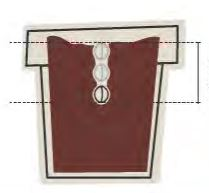
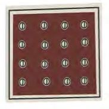

La siembra directa consiste en colocar las plantas en el lugar donde permanecerán hasta la cosecha.
Esta técnica se utiliza solo para algunas especies.
Para las demás, se realiza la siembra de los plantines en un almácigo y luego una vez crecidos se transplantan a un lugar definitivo.

¿Cómo realizamos la siembra?
- 1. Marcar el surco. 
- 2. Ubicar las semillas en la cantidad y profundidad adecuadas. 
- 3. Cubrirlas con tierra. 
- 4. Regar. 
Claves
Cada vez que se siembre se deben tener en cuenta dos factores:
Profundidad
Densidad
La profundidad de la siembra se calcula a partir de las dimensiones de la semilla. Es de dos a tres veces su tamaño.
La densidad de siembra alude a la cantidad de semillas que se ubican en una superficie. ¿Cómo las contamos? Una buena medida es la pizca de sal. Cada pizca contendrá entre 20 y 30 semillas.
